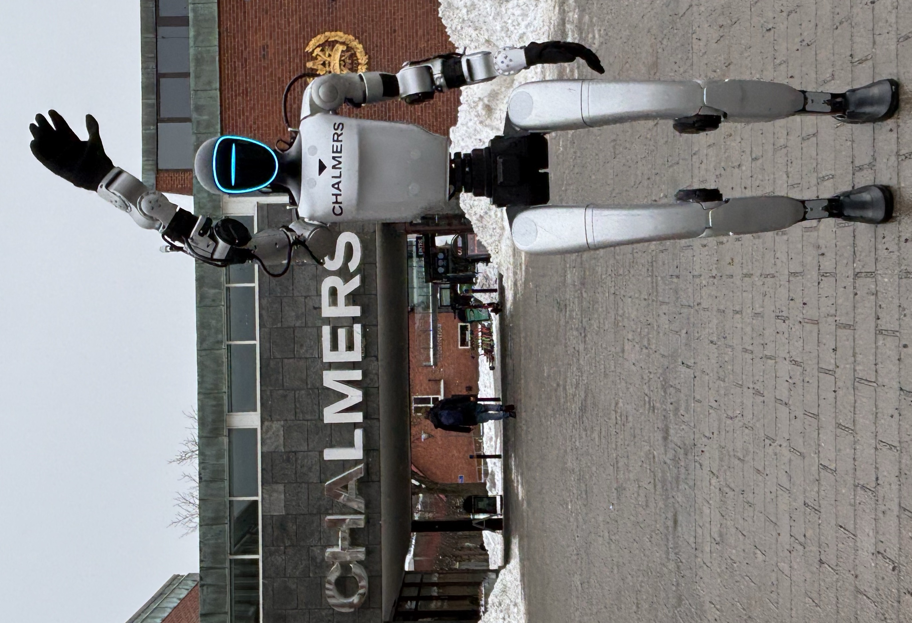
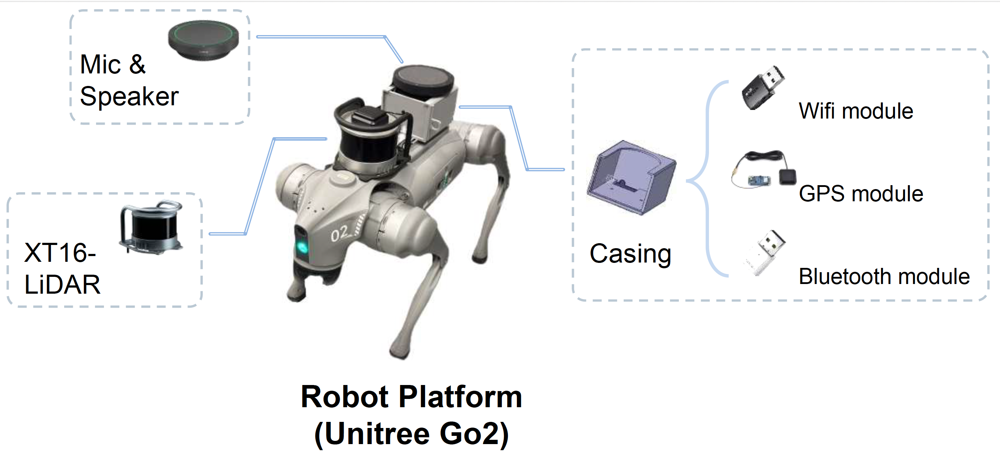
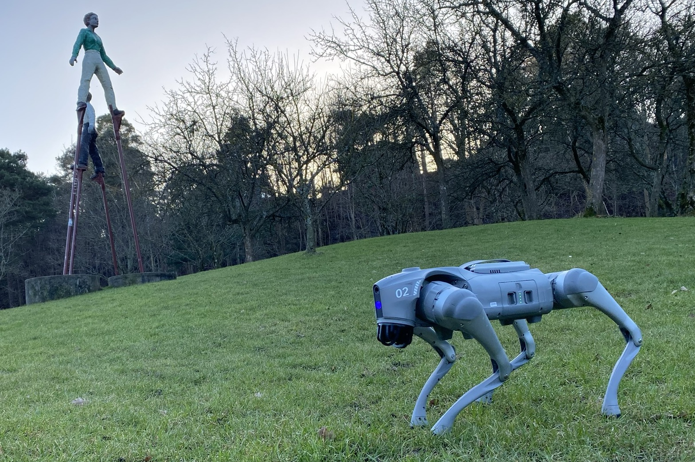
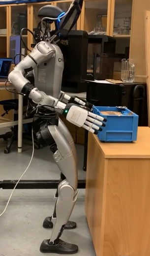
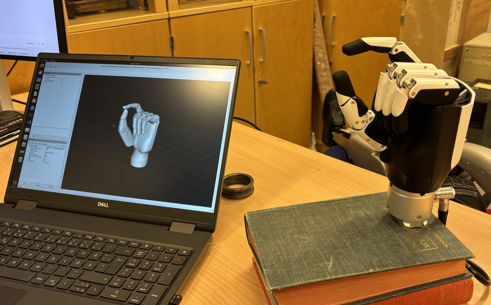
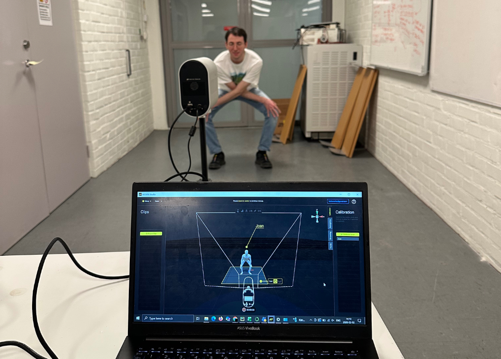
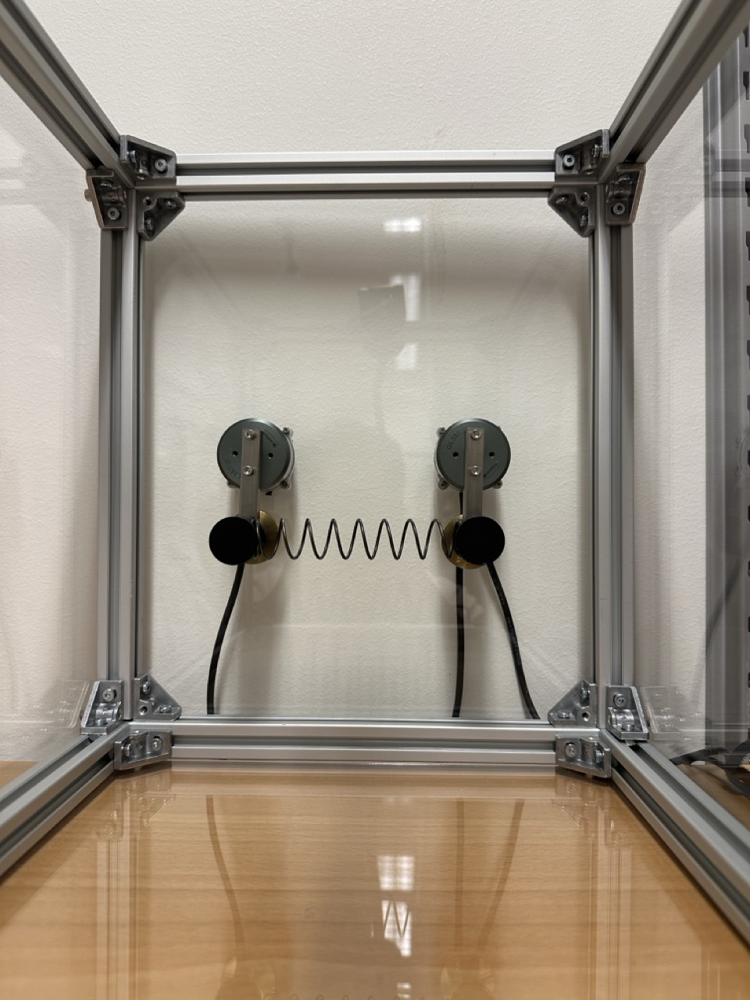
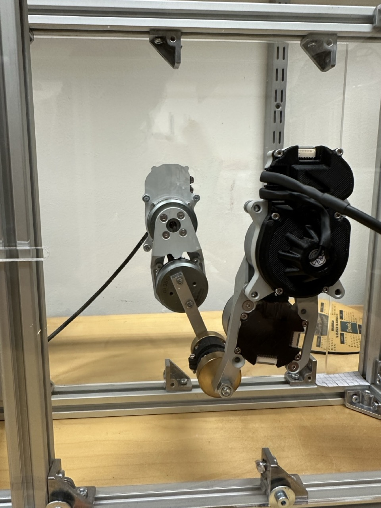
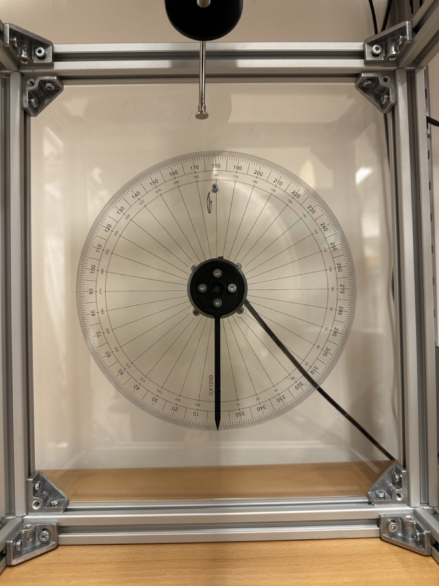

Unitree G1 Humanoid (EDU)
The Unitree G1 EDU is a full-size humanoid robot platform designed for research in whole-body loco-manipulation. With up to 43 degrees of freedom and high-torque joints, it enables complex tasks combining locomotion and dexterous manipulation. The EDU variant provides low-level joint access, making it suitable for custom control algorithms in reinforcement learning and optimal control research.
| Height | 1320 mm |
| Weight | ~35 kg (with battery) |
| DOF | up to 43 (EDU) |
| Knee torque | 120 N·m (EDU) |
| Arm payload | ~3 kg per arm |
| Battery life | ~2 hours |
| Sensing | Depth camera, 3D LiDAR |

Fido: Friendly and Interactive Robot Dog
The Unitree Go2 EDU serves as the mobile base of FIDO. The platform provides agile quadrupedal locomotion through 12 degrees of freedom (DoF), together with an onboard high-precision IMU and joint encoders for stable low-level motion control. In addition, the EDU version includes an onboard Nvidia Jetson computer, which acts as the main computing unit of the system. We have further integrated an XT16 LiDAR unit and GPS sensor to improve the system awareness.
| DOF | 12 |
| Weight | ~15 kg (with battery) |
| Max speed | 3.7 m/s |
| Payload | up to 8 kg |
| Peak joint torque | ~45 N·m |
| Sensing | 360° 4D LiDAR, HD camera |
| Connectivity | WiFi 6, Bluetooth, 4G |


INSPIRE Dexterous Robot Hands
INSPIRE RH56DFX dexterous hands are high-performance end-effectors designed for human-like manipulation tasks. Each hand has 6 degrees of freedom across 12 joints, enabling grasping, in-hand manipulation, and tool use. At RAIL, the hands can be optionally integrated with the Unitree G1 humanoid for bi-manual manipulation research.
| Model | RH56DFX-2L / RH56DFX-2R |
| DOF | 6 per hand |
| Joints | 12 per hand |
| Weight | 540 g per hand |
| Interface | RS485 |
| Repeatability | ±0.2 mm |
| Max thumb grip | 15 N |
| Max finger grip | 10 N |
| Force resolution | 0.5 N |


MOVIN 3D Motion Capture System
The RAIL lab is equipped with a marker-less motion capture system, capable of tracking of human skeleton in real time. The system enables state estimation for human subjects, supporting research in human-robot interaction, imitation learning and biomechanics.

CloudPendulum Infrastructure
The CloudPendulum ecosystem at RAIL provides remote browser-based access to physical underactuated robot hardware. Users can run their own control or learning algorithms and observe results via live camera feeds — no physical lab access required. The platform supports courses in programming, AI, dynamics, robotics, and control at Chalmers, and is open to researchers and industry partners worldwide.

Simple Pendulum
Torque-limited single-link underactuated system; canonical testbed for swing-up and balancing controllers.

Double Pendulum
Two-link system configurable as Acrobot (distal actuated) or Pendubot (proximal actuated); benchmark platform for the AI Olympics series.

Coupled Oscillator
Two mechanically coupled pendula for studying synchronisation, energy transfer, and networked control.

5-Bar Mechanism
Closed-chain parallel kinematic mechanism with two actuated links; used for trajectory optimisation and constrained control experiments.

Double Integrator
Rotary system with a mass-less pointer providing second-order integrator dynamics; testbed for learning about basic PID control and dynamic programming.